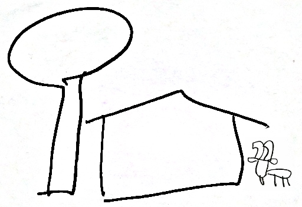

Island Life: Trouble in Paradise
Not everyone who interacts with island blockchains intends to follow the rules or help other people. Some will lie, cheat or steal for their own benefit,*or what they think might benefit them, even if it can't or won't.
and others will try to bring down the system for no obvious personal gain. These are a few of the early troubles that beset blockchain users on the island.
Lazy Larry lies low in the lobby of Long Bay Resort, looking for love or at least a lady with a lot of loot. Larry's luck has been light lately, but he does lure the occasional lonely woman who is loony enough to linger in his lair. Larry wants a wealthy woman to take him home, but since that hasn't worked in a long long time, he is willing to take her wealth home with him. With the limited trust Larry develops through lust with his lady friends, he has been able copy some of their private keys. With these in hand, later he can look up their value online and decide if it's time for him to leave the island and cash out. The problem he is running into is that the keys only hold their value until they are spent on something, at which point they become worthless, and some of the cagier cash issues like ZIC expire within just a few weeks of assignment, thwarting his attempts to stockpile a big score.
Larry's best hope is to truly win a woman's heart, the little bits of value he is accumulating from their vacation pocket money won't ever amount to much, and sooner or later his suspicious snooping in their phones will get him in trouble. One day a scammer like Larry did cash out a bunch of scattered secret keys all at once, collecting almost US$15,000 in value from over a dozen different victims. He tried to cover his tracks, trading for a series of island issues before cashing out to various overseas issues and eventually difficult to track "anonymous" cryptocoins, but the timing of the cash-out made traditional police investigation techniques very effective. When the victims were contacted they all had suspicions about the same shady character who had been eager to handle their phone during the past several weeks, and though he had left for a different island jurisdiction the day before he attacked, he wasn't hard to track down.
Other social engineer attackers are more subtle, moving from place to place and cashing out a little at a time. They remain at large, not getting rich quickly, but serving as a lesson that: when you keep valuable secrets on your phone, you shouldn't give strangers free access to it. Some wallet software has set "convenience limits" where secrets beyond a certain value threshold are kept behind an extra layer of passphrase protection, so if you are careless enough to let your unlocked phone get copied, at least the higher value keys remain safe. And, of course, if you have major investment levels of value in your secret keys, they can be offloaded to cold storage, safe from phone or network attack, kept on USB stick or even paper in a safe deposit box or similar physically secured location.
Unlike bandits who steal cash, secret thieves depend on stealth and are not as likely to mug you in a dark alley. To help discourage strong-arm extortion of value, there is the option of setting a "duress password" on wallets - using this password will unlock the wallet and everything will behave as if the normal password were used, but it also hides the valuable keys, sends a distress signal to friends, family and local law enforcement along with GPS location, photos, and audio of the event.
The network attacker: faceless, unknown, packets coming from random sources around the internet attempting to fool servers into directing value somewhere that it shouldn't go according to the open rules of exchange. The most successful network attacks involve compromising exchange servers run by amatuers and replacing the server application with compromised code, but since the early successful replacement attacks were publicized and analyzed, most server operators stick with a full system image with state of the art security robustness.
29 July 2018
MIT License
Copyright (c) 2018 Assign Onward
Permission is hereby granted, free of charge, to any person obtaining a copy
of this software and associated documentation files (the "Software"), to deal
in the Software without restriction, including without limitation the rights
to use, copy, modify, merge, publish, distribute, sublicense, and/or sell
copies of the Software, and to permit persons to whom the Software is
furnished to do so, subject to the following conditions:
The above copyright notice and this permission notice shall be included in all
copies or substantial portions of the Software.
THE SOFTWARE IS PROVIDED "AS IS", WITHOUT WARRANTY OF ANY KIND, EXPRESS OR
IMPLIED, INCLUDING BUT NOT LIMITED TO THE WARRANTIES OF MERCHANTABILITY,
FITNESS FOR A PARTICULAR PURPOSE AND NONINFRINGEMENT. IN NO EVENT SHALL THE
AUTHORS OR COPYRIGHT HOLDERS BE LIABLE FOR ANY CLAIM, DAMAGES OR OTHER
LIABILITY, WHETHER IN AN ACTION OF CONTRACT, TORT OR OTHERWISE, ARISING FROM,
OUT OF OR IN CONNECTION WITH THE SOFTWARE OR THE USE OR OTHER DEALINGS IN THE
SOFTWARE.